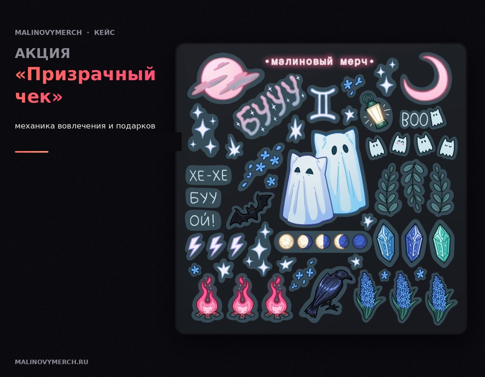
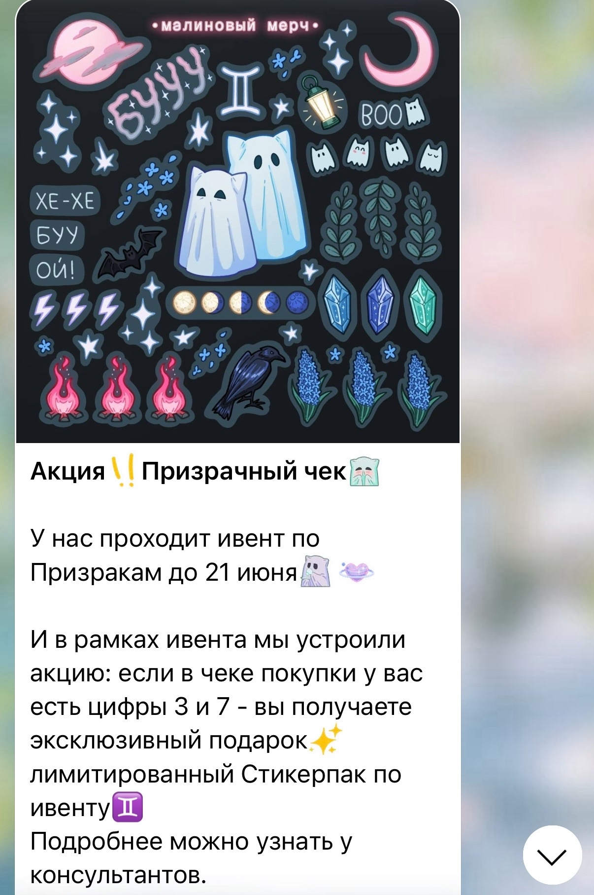
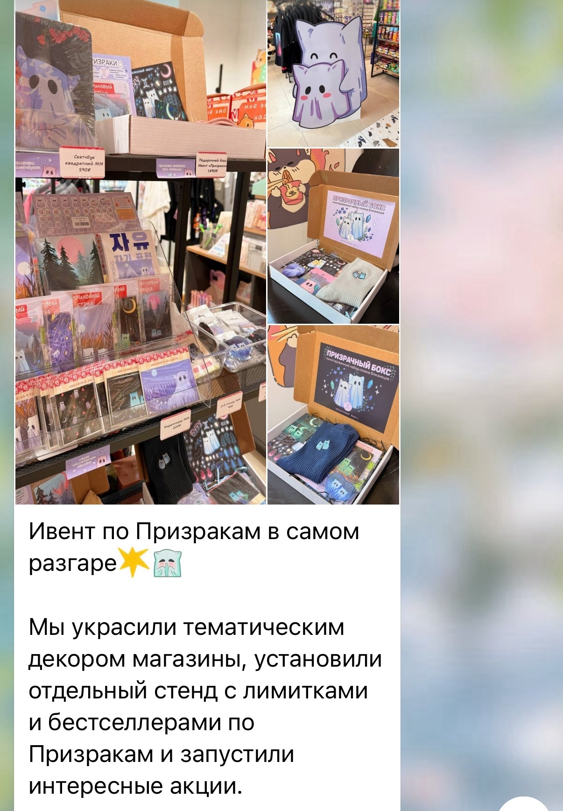

Механика, которая заставляет добавить товар в корзину. Создана для сезона Близнецов, чтобы увеличить ценность покупки и мотивировать клиента добрать товары до нужной суммы.
Придумала механику «Призрачного чека»: подарок выдавался при покупке, в чеке которой встречались определённые цифры. Механика была встроена в атмосферу сезона и не выглядела обычной скидочной акцией.
Моя роль: концепция → механика → условия → коммуникация → оформление → запуск в магазине.


